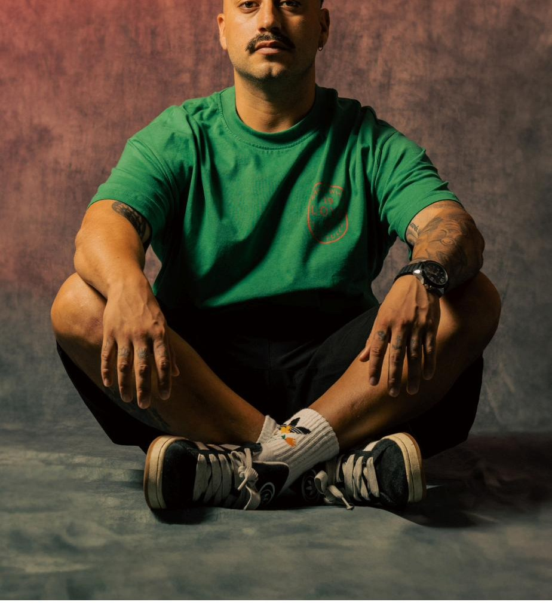
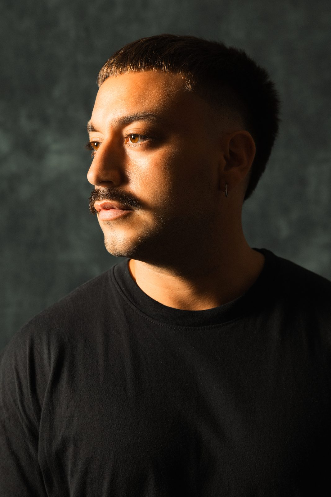
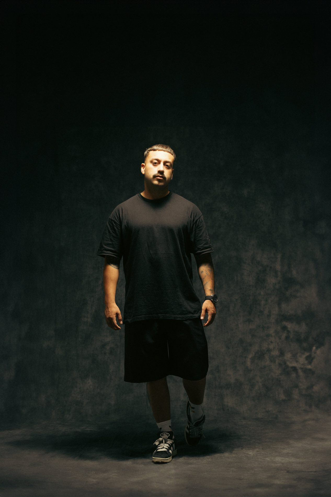

2021—
The Soundgarden
Sello fundado por Nick Warren. Una de las plataformas más respetadas del progressive contemporáneo.
Lanzado
Lautaro Gómez Iovino, conocido artísticamente como Iovino, es un DJ y productor argentino nacido en la Provincia de Buenos Aires en 1993, actualmente radicado en Barcelona.
Influenciado desde temprana edad por la música y sus diversos géneros, inició su carrera profesional como DJ en 2019, llevando su sonido a reconocidos clubes de la Provincia de Buenos Aires como Crobar, Bahrein, Elements Club, La Biblioteca y Niceto Club.
Su camino como productor comenzó en 2021. Desde entonces, ha lanzado música en sellos de renombre como The Soundgarden de Nick Warren, Musique de Lune y Slc6 Music, recibiendo apoyo constante de grandes referentes como Hernán Cattáneo, Nick Warren, John Digweed y Mariano Mellino.

Sello fundado por Nick Warren. Una de las plataformas más respetadas del progressive contemporáneo.
LanzadoSello francés de melodic & deep house orientado a una estética nocturna y emocional.
LanzadoPlataforma argentina ligada al circuito progressive sudamericano.
LanzadoPróximo lanzamiento en uno de los sellos más sólidos de la escena progressive.
PróximamenteLanzamiento programado para el ciclo 2026.
Próximamente
Bookings, releases, colaboraciones o consultas de prensa.